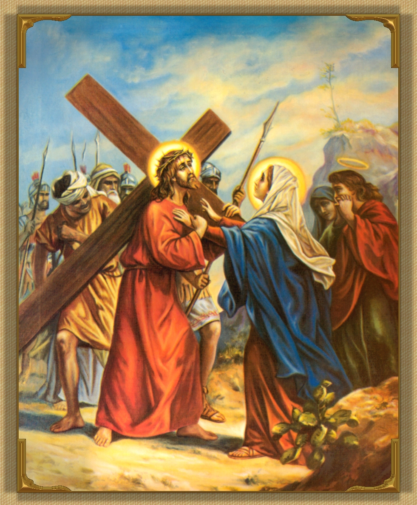

My Jesus, Lord, I know what you are telling me. To watch the pain of those we love is harder than to bear our own.
To carry my cross after you, I, too, must stand and watch the sufferings of my dear ones━ the heartaches, sicknesses, and grief of those I love.
And I must let them watch mine, too.
I do believe━ for those who love you all things work together unto good.